A slow journey through Kumaon, two nights at each stop. Tiger country at Corbett, the lakes of Bhimtal and Sattal, the orchards of Mukteshwar, the oak and rhododendron forest of Binsar, Munsiyari facing the Panchachuli peaks, and Kausani's long Himalayan view. This itinerary is built from our nights-per-place outline; the day plans, timings and changes are ours. We changed the order of the hills: the outline ran Corbett, Binsar, Munsiyari, Kausani, Mukteshwar, Bhimtal, which doubles back. Our loop climbs gradually and ends at Kathgodam station.
See it for yourself
Photos from the journey

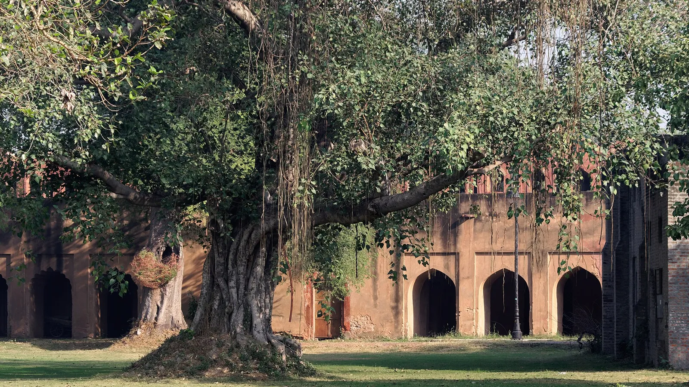
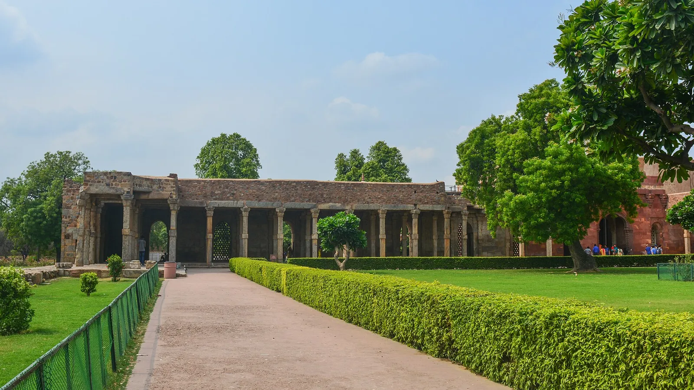
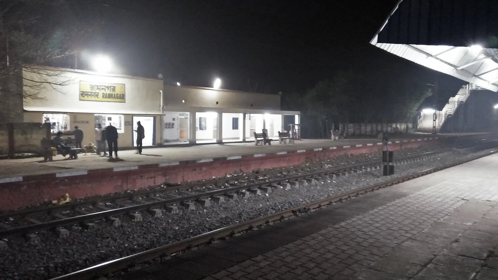
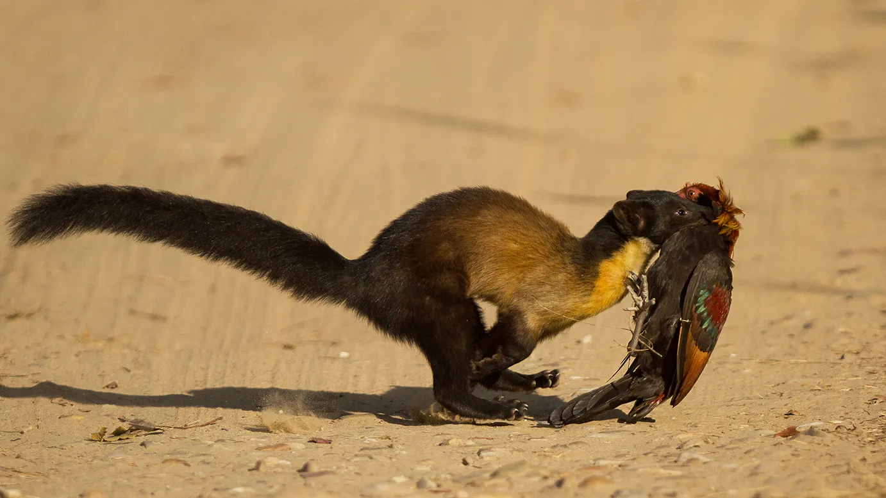
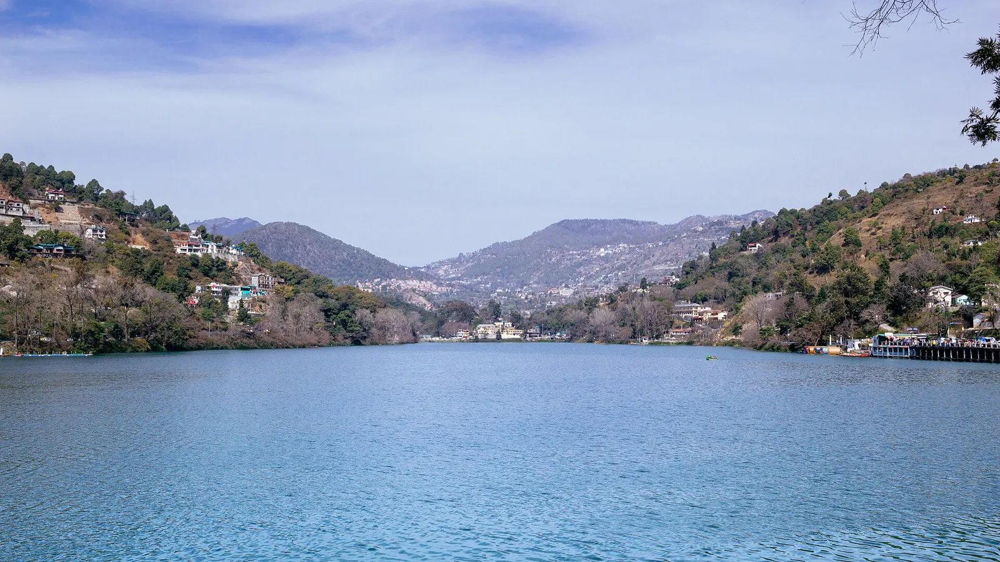
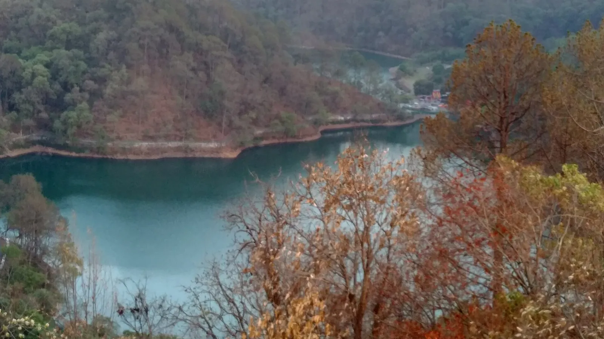
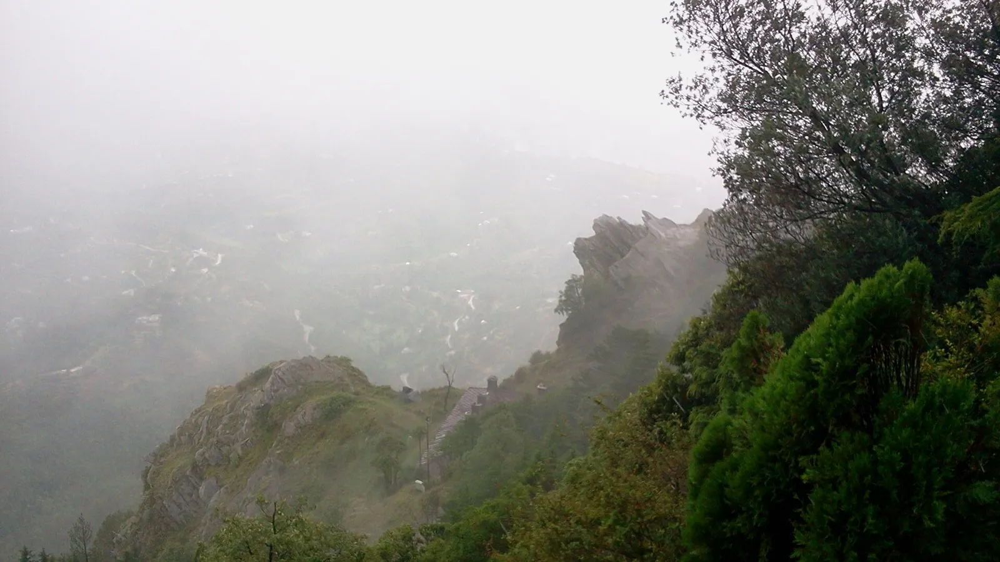
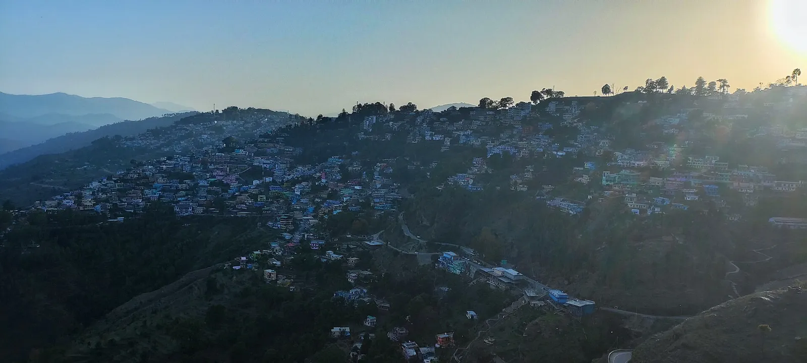
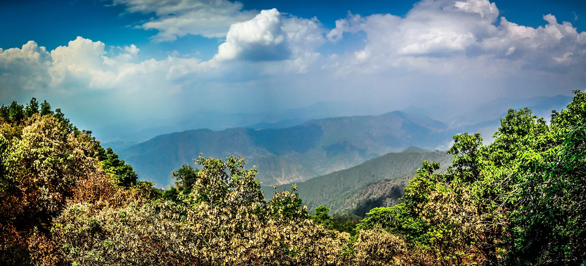
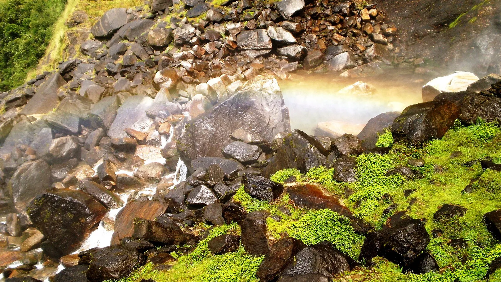
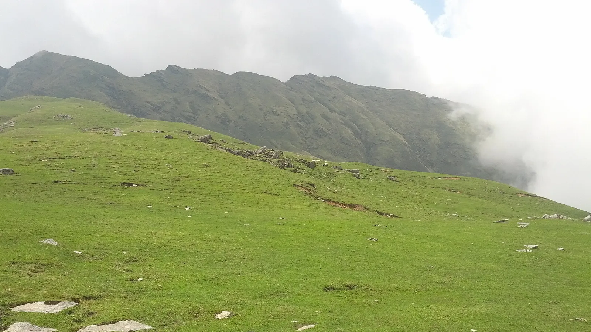
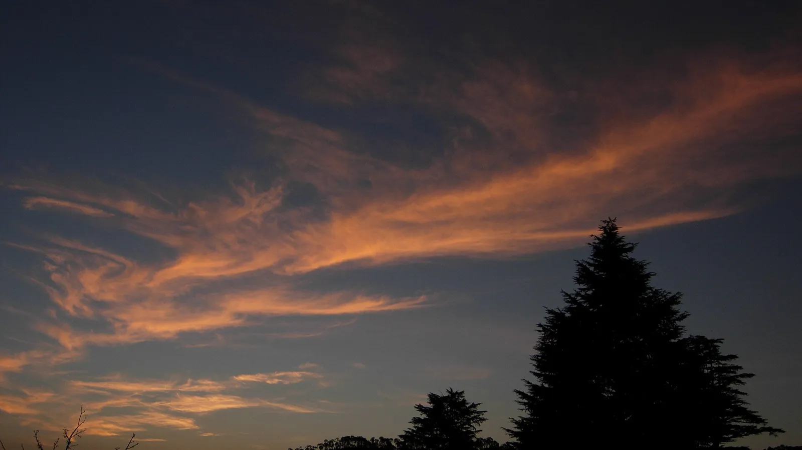
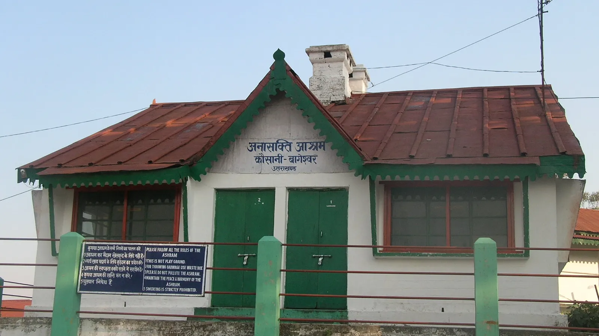
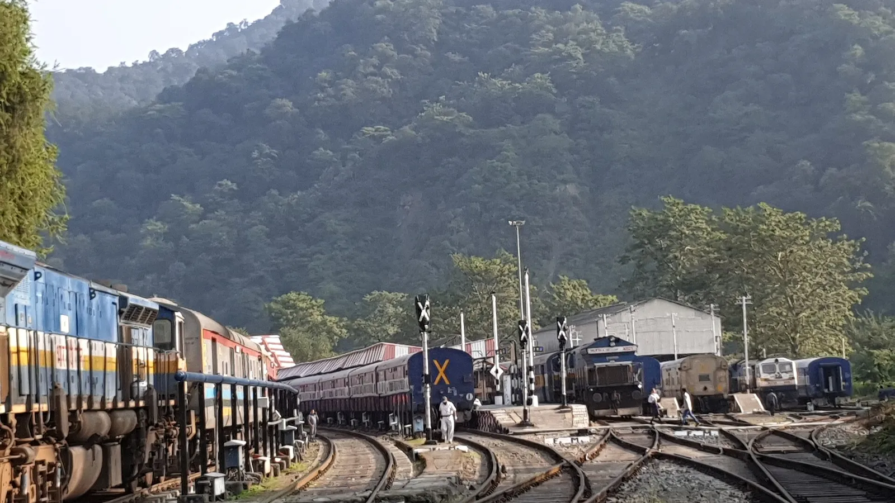

Where you go
The journey on one map
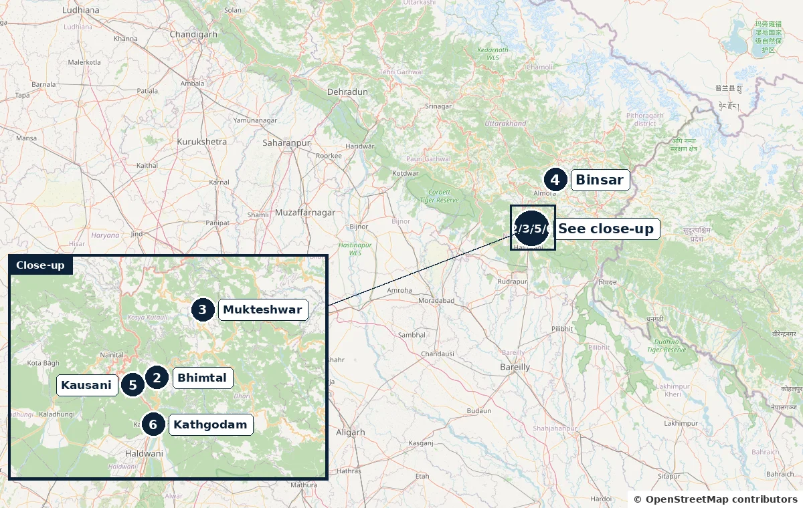
DelhiRamnagarBhimtalMukteshwarBinsarMunsiyariKausaniKathgodamDelhi
Day by day, in short
Daily travel brief
Distances are by road for the whole day. The full plan with timings comes with your detailed itinerary.
-
1
Arrive in Delhi
- Three Delhi nights give a gentle start.
-
2
-
3
Delhi at your own pace
- Tomorrow's train leaves early.
-
4
Train to Ramnagar and Corbett
- Safari permits for Corbett are booked online in your ID name.
-
5
Tiger country: Jim Corbett
- Jeep safari: most zones close from mid-June to mid-October; Jhirna and Dhela stay open.
- Dhikala zone needs a forest rest-house booking months ahead.
-
6
To the lakes of Bhimtal and Sattal
- Nainital is 22 km away if you want a half day there.
-
7
Sattal and Naukuchiatal
- Over 500 bird species are recorded around Sattal.
-
8
Up to the orchards of Mukteshwar
- Mukteshwar Dham and Chauli ki Jali: chauli ki Jali has sheer drops.
- Clear mornings show the Himalaya from Trishul to Nanda Devi.
-
9
Mukteshwar at leisure
- A lovely place to do nothing at all.
-
10
Into the forest of Binsar
- Binsar lodges run on solar power: limited electricity at night.
-
11
Zero Point and the forest trails
- Sanctuary entry fees are paid at the gate.
-
12
The high road to Munsiyari
- The longest drive of the trip.
-
13
Panchachuli and Khaliya Top
- Khaliya Top hike: only for fit walkers, with a guide.
- Pack warm: evenings are cold all year.
-
14
Back to Kausani's Himalayan view
- Gandhi called Kausani the Switzerland of India.
-
15
Anasakti Ashram and the tea estate
- Tomorrow's train from Kathgodam leaves in the afternoon.
-
16
Down to Kathgodam and the train to Delhi
- A night near the airport makes tomorrow easy.
-
17
Fly home from Delhi
- Transfer to the airport: leave 4 hours before an international flight and 3 before a domestic one.
- Pack liquids and souvenirs in checked baggage.
Local know-how
Travel hacks from our desk
UPI, cards and cash
UPI works almost everywhere, even at small stalls. Keep some cash in INR 100 and 200 notes for temples, parking, tips and places where the network is weak.
Temple and shrine etiquette
Cover shoulders and knees. Remove shoes where asked, and carry socks for hot stone floors. Leather belts and bags are not allowed inside some Jain and Hindu temples. Ask before photographing people and inside shrines.
Water and street food
Drink sealed bottled or filtered water only. Choose busy stalls where food is cooked in front of you, and skip cut fruit and ice from roadside stalls.
Driving times
Indian roads are slower than the kilometres suggest: plan on 40 to 50 km an hour on highways and much less in hills and towns. Your driver's breaks and meal stops are built into the timings.
Plugs and tipping
Plugs are Indian three-pin and two-pin, 230 volts. Tipping drivers and guides about INR 300 to 500 a day is appreciated.
When to go
Best time to visit for this journey
October and November: the clearest Himalayan views of the year.
March to June and September to November. Avoid July and August, when monsoon landslides close mountain roads. Snow can fall at Munsiyari and Mukteshwar in January and February.
The package
What's included
Included
- 16 nights with breakfast
- Delhi to Ramnagar and Kathgodam to Delhi trains
- Private car in the hills
- Two Corbett jeep safaris
- 24/7 support from Blue Diamond Voyage
Not included
- Flights and trains not listed as included
- Entry fees, guides, boats and activities
- Lunches and dinners unless stated
- Travel insurance
The detailed itinerary
Some journeys are planned. Ours are crafted.
The full 17-day plan is ready: hour-by-hour timings, drive times, temple dress codes, food for your diet and a route map for every day. Tell us your dates and your city, and we'll send it to you on WhatsApp, shaped around you.
- Hour-by-hour timings
- A route map for every day
- Hotel and room details
- Visa and entry steps
- Vegetarian and Jain dining
24/7 travel desk+91 97148 59797+91 98242 21400
Photo and map credits
- Indira Gandhi International Airport: Wasiul Bahar, CC BY-SA 4.0, via Wikimedia Commons
- Red Fort: Jakub Hałun, CC BY-SA 4.0, via Wikimedia Commons
- Qutub Minar: Syed Sajidul Islam, CC BY-SA 4.0, via Wikimedia Commons
- Ramnagar Railway Station: Biswarup Ganguly, CC BY 3.0, via Wikimedia Commons
- Bijrani Safari Zone: Soumyajit Nandy, CC BY-SA 4.0, via Wikimedia Commons
- Bhimtal Lake: Subhrajyoti07, CC BY-SA 4.0, via Wikimedia Commons
- Sattal: raj, CC BY-SA 4.0, via Wikimedia Commons
- Mukteshwar: Ashish.sadh, CC BY-SA 3.0, via Wikimedia Commons
- Almora: ArmouredCyborg, CC BY-SA 4.0, via Wikimedia Commons
- Zero Point Binsar: Kshitijjjj, CC BY-SA 4.0, via Wikimedia Commons
- Birthi Falls: Spandan chowdhury, CC BY-SA 4.0, via Wikimedia Commons
- Khaliya Top: Shyamal L., CC BY-SA 3.0, via Wikimedia Commons
- Kausani: Anshumandatta at English Wikipedia, CC BY 2.5, via Wikimedia Commons
- Anasakti Ashram: Kinkhab, CC BY-SA 4.0, via Wikimedia Commons
- Kathgodam Railway Station: Ravi Dwivedi, CC BY-SA 4.0, via Wikimedia Commons
- Indira Gandhi International Airport: Wasiul Bahar, CC BY-SA 4.0, via Wikimedia Commons
- Maps: © OpenStreetMap contributors; road routes by OSRM.